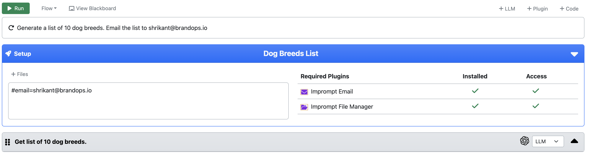

Flows & Tasks#
Every agent has capabilities to create and run workflows and tasks.
What is a flow?#
A flow is a sequence of tasks that are executed in a specific order to achieve a particular goal or objective. It represents a series of steps that need to be performed to complete a larger process or solve a problem. Each task in the workflow can be dependent on the output of the previous task and may require specific inputs to execute successfully.
What is a tagged data in a flow?#
In a workflow, tagged data refers to information or files that have been labeled or marked with specific metadata for easy identification and reference throughout the workflow. It’s akin to using global variables that can be accessed and utilized consistently across different stages or steps of the workflow.
Examples:
- Metadata: #email=shrikant@brandops.io
This can be referenced in any task in the workflow. For example, if you want to send an email to this tagged email id, you can use the tagged data as follows:
` Send an email with text Hello World to #email `
- File: #demo.txt=https://imprompt-files.s3.amazonaws.com/demo.txt
This can be referenced in any task in the workflow. For example, if you want to read the contents of the file, you can use the tagged data as follows:
` Get content from the file #demo.txt `
How to add a tagged data in a flow?
The setup section of the workflow editor has option to either add a metadata or a file.
NOTE: When a new workflow is created from an assignment, the tagged data from the assignment is automatically added to the workflow.
What are plugins in a flow?#
A plugin is a component that can be installed on an agent to extend its capabilities. It can be used to perform specific tasks or operations that are not natively supported by the agent. Plugins can be installed from the plugin store.
Each workflows can achieve its goal by using a combination of LLM tasks and plugin tasks. For example, a workflow can use LLM tasks to generate text and plugin tasks to send emails or make API calls.
How to install a plugin to an agent?
Go to Setup > Plugins > Marketplace and install the plugin to an agent. A workflow can use the plugin only if it is installed on the agent. For example, if you want to create a workflow that can send an email then you have to install the email plugin to the agent.
How do you give an access to a plugin
You don’t need to give the access for a no-authentication plugin. For a user-authentication plugin, you need to provide the credentials to access the plugin. It’s an API key for user and service level authentication plugins, username and password for basic authentication plugins and you have to do oauth authentication for oauth plugins.
NOTE: You can see the tagged data and plugins in the setup section of the workflow editor.
What is a task?#
A task is an individual unit of work within a workflow. It represents a specific action or operation that an agent can perform. Tasks can vary in complexity and can be anything from simple calculations or data manipulations to more complex actions such as running machine learning models or interacting with external systems. Each task is designed to achieve a specific sub-goal within the larger workflow.
A task can be of the following types:
LLM task
An LLM task is a task that is completed by using a LLM.
Plugin task
A plugin task is a task that is completed by using a plugin. To use a plugin, you need to install it first. You can install a plugin from the plugin store.
Handling task outputs#
The output of any task within the workflow can be handled in different ways, as follows:
1. Push to the next task
When a task completes its execution, it may generate an output that is meant to be used as an input for the next task in the workflow. This chaining of outputs and inputs ensures that tasks are connected and can pass along relevant information to subsequent steps.
2. Push to a blackboard
A blackboard is a shared memory space or repository where tasks can read and write data. When a task produces an output, it can push the data to the blackboard so that other tasks can access and utilize it for their own processing. This approach promotes data sharing and collaboration among different tasks.
3. Save to a vector database
A vector database is a storage mechanism that can store and manage large amounts of structured data, typically represented in vector form. When a task generates output that needs to be stored persistently, it can save the data in the vector database for later retrieval and usage.
NOTE: Agent chooses the appropriate output handling mechanism based on the nature of the task and the type of data it generates. A workflow designer can override the default output handling mechanism for a task and specify a different one if required.
Handling task inputs#
Each task in the workflow can accept multiple inputs, which may include the following:
1. Inputs from the previous task
When a task is executed, it may require some inputs from the previous task in the workflow. This ensures that the tasks are connected and can pass along relevant information to subsequent steps. if the input is a JSON array then a task can be executed multiple times for each element in the array.
2. Inputs from the blackboard
A blackboard is a shared memory space or repository where tasks can read and write data. When a task is executed, it can read data from the blackboard and use it for its own processing. This approach promotes data sharing and collaboration among different tasks.
3. Inputs from the vector database
A vector database is a storage mechanism that can store and manage large amounts of structured data, typically represented in vector form. When a task is executed, it can retrieve data from the vector database by doing semantic search with input prompt and use it for its own processing.
When to push to the vector database?#
When a task generates large amount of text output, it is recommended to push the output to the vector database. This will help in reducing the token usage of the LLM. The LLM can then retrieve the output from the vector database by doing semantic search with input prompt.